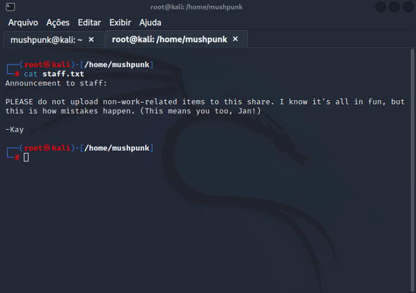

E aí turma, beleza? Hoje venho compartilhar com vocês o “Walkthrough” da máquina Basic Pentest do TryHackMe. A máquina é free, não é necessário ser assinante, então cola aí e vamos nessa!
Após iniciarmos a máquina, precisamos fazer um breve reconhecimento do nosso alvo. Vou começar executando o nmap pra varrer as portas atrás de serviços em execução
O nmap nos indicou que temos alguns serviços executando nessa máquina, os mais relevantes pra nós são: 22/SSH, 80/HTTP, 445/SMB
Quando acessamos a página web que está em execução na porta 80 temos uma página que nos informa que o site está em manutenção
Aparentemente nessa primeira página não temos nada, mas dando uma olhada no código fonte da aplicação percebemos que tem uma nota para os desenvolvedores pedindo para que eles olhem a “seção de notas”
Sabendo que temos uma seção de notas para serem olhadas, vamos realizar um brute force nos diretórios do site em busca dessas notas.
gobuster dir -u 10.10.251.1:80 -t 16 -w /usr/share/wordlists/dirbuster/directory-list-2.3-medium.txtBingo! Encontramos o diretório /development
Question: What is the name of the hidden directory on the web server(enter name without /)? — R: developmentAcessando-o encontramos dois arquivos .txt
Um desses arquivos (dev.txt) nos diz que o smb foi configurado, até aqui nada de muito relevante, já sabemos que tem um arquivo smb executando nesse ip.
No segundo arquivo (j.txt) temos a seguinte mensagem:
For J:
I've been auditing the contents of /etc/shadow to make sure we don't have any weak credentials,
and I was able to crack your hash really easily. You know our password policy, so please follow
it? Change that password ASAP.
-K
Esse arquivo nos diz que a uma das senhas do arquivo /etc/shadow foi facilmente quebrada. O início do arquivo nos diz que esse ele é para alguém chamado “J”
Bom, as informações que temos até aqui é que alguém conhecido como “J” tem uma senha fraca e que pode ser facilmente quebrada.
Precisamos continuar nosso processo de reconhecimento e enumeração para encontrarmos mais informações sobre essa “J”
Ainda não demos uma olhada no SMB desse servidor, vamos testa-lo! Aqui usarei o enum4linux para recolher o máximo de informações possíveis
enum4linux 10.10.251.1 -aComo a saída do comando enum4linux é muito grande, permita-me abstrair e informar que uma das coisas mais importantes que encontramos foi um compartilhamento chamado de “anonymous”. Ok particularmente é bem legal, a próxima coisa a ser feita é tentar acessa-lo através de um usuário anonimo através do comando:
smbclient //10.10.251.1/anonymous -U anonymousBingo! Conseguimos acesso. Ao listar os arquivos dessa pasta temos o arquivo staff.txt
Aqui, encontramos dois nicks (Jan e Kay) lembram dos arquivos que encontramos no /development? Lá tinham as letras J e K, que podemos assumir que são reduções do nick Jan e Kay.
Question: What is the username? — R: JanLegal! Em um dos arquivos que lemos lá dizia que a senha de “J” ou “Jan” estava fraca e poderia ser facilmente quebrada. Vamos tentar?
Aqui eu vou tentar acessar o serviço SSH com a credential da Jan, como não temos a senha vai ser preciso realizar um brute force com o hydra
hydra -l jan -P /usr/share/wordlists/rockyou.txt -t 16 10.10.251.1 ssh Question: What is the password? — R: armandoAgora que temos o login e a senha da Jan, vamos logar na máquina alvo via SSH
Dando uma navegada na máquina, descobrimos que dentro da /home temos a pasta de outro usuário chamado “kay”
Question: What is the name of the other user you found(all lower case)? — R: kayDentro da pasta da kay temos o arquivo pass.bak que infelizmente não temos permissão de leitura. Executando o comando “sudo -l” para encontrar algum binário que pode ser executado como sudo por nós, também não temos sucesso.
Precisamos encontrar alguma forma de acessar a máquina como a usuário kay.
Dentro da pasta da kay temos a pasta .ssh, que tal darmos uma olhada lá?
Bingo, aqui temos alguns arquivos que podem ser muito útil para nós. Como na máquina que estamos logado via ssh não temos as ferramentas do Kali disponível, precisamos dar um jeito de termos esses arquivos na nossa máquina.
A solução que eu encontrei pra isso foi executar um servidor python na máquina alvo através do comando
python -m SimpleHTTPServer 9001O que vai me dar a possibilidade de baixar esses arquivos diretamente da minha máquina. Eu vou baixar apenas o arquivo id_rsa, que é a chave privada da kay para acesso via ssh
Após baixada a id_rsa, o que precisamos fazer é alterar a permisão para 600 através do comando
sudo chmod 600 id_rsaFeito isso tentaremos acessar o ssh passando a id_rsa.pub como "senha" através do parâmetro -i
Infelizmente sem sucesso porque mesmo com a chave pública precisamos fornecer uma senha.
Por sorte temos o john, na verdade uma versão dele que é o ssh2john que permite quebrar hashes de SSH.
Primeiro precisamos gerar um hash da senha, faremos isso com o ssh2john, que é uma “variante” do john para trabalhar com hashes de SSH.
Feito isso utilizaremos o próprio john para quebrar o hash gerado pelo ssh2john
ssh2john id_rsa > id_rsa.hashE voilà, encontramos a senha do hash
Agora tentando conectar via SSH com as credenciais da kay passando a id_rsa como parâmetro através do -i e fornecendo “beeswax” como passphrase conseguimos logar na máquina como kay e ler o arquivo pass.bak
Question: What is the final password you obtain? — R: heresareallystrongpasswordthatfollowsthepasswordpolicy$$